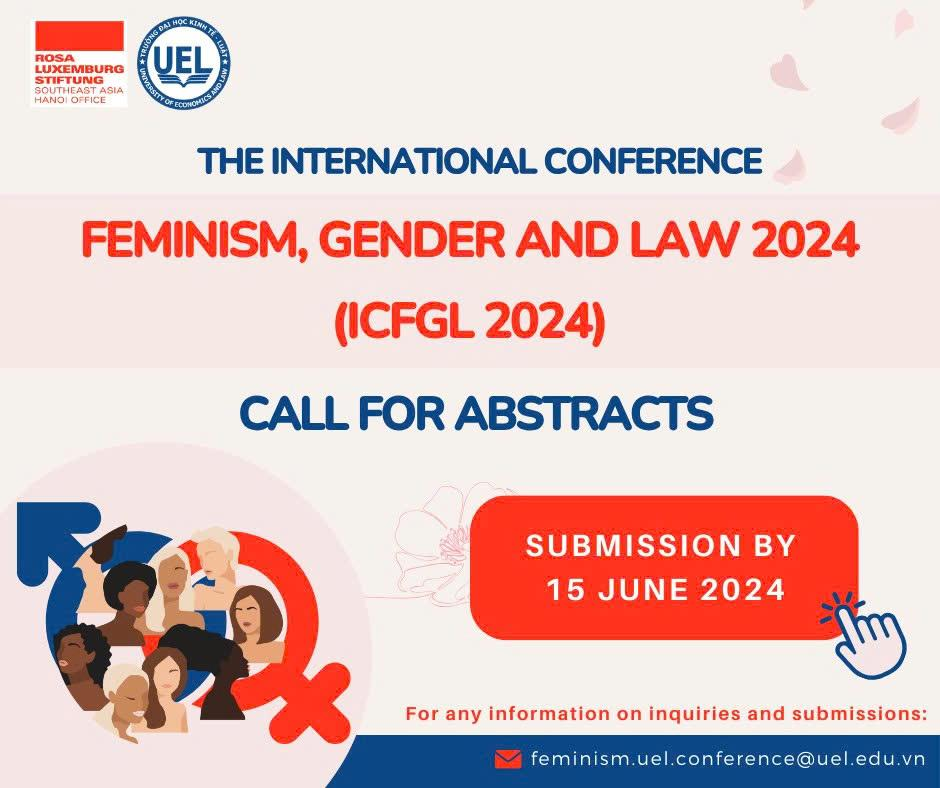

ICFGL 2024

Các tiếp cận pháp lý truyền thống thường mặc định rằng pháp luật vô tư và khách quan, nhấn mạnh sự mạch lạc, nhất quán và khả năng tiên liệu của các quy phạm pháp luật. Lý luận pháp lý nữ quyền, theo Bartlett (1990), thách thức giả định này bằng cách đặt câu hỏi về cách các quan điểm nam giới đã định hình các khái niệm pháp lý, chuẩn mực thể chế và lý luận pháp lý.
Với tư cách là một kiến tạo xã hội, pháp luật trong lịch sử đã phản ánh và tái tạo các quan hệ quyền lực, bao gồm bất bình đẳng giới, đặc biệt trong các giai đoạn phụ nữ có ít cơ hội tham gia vào các thiết chế pháp lý và vai trò nghề nghiệp. Mặc dù pháp luật đã nỗ lực giải quyết các vấn đề của phụ nữ trong nhiều bối cảnh, lý luận pháp lý nữ quyền tiếp tục phê phán mức độ mà kinh nghiệm và quan điểm của phụ nữ vẫn còn thiếu đại diện trong học thuyết và thực hành pháp lý.
Nhằm thúc đẩy công bằng xã hội và bình đẳng giới, lý luận pháp lý nữ quyền ngày càng được ứng dụng trong nhiều lĩnh vực pháp lý, từ hiếp dâm và lao động tình dục đến lao động, bồi thường thiệt hại ngoài hợp đồng, hợp đồng, tài sản và pháp luật công ty.
Hội thảo Quốc tế về Nữ quyền, Giới và Pháp luật 2024 do Trường Đại học Kinh tế – Luật, Đại học Quốc gia TP. Hồ Chí Minh tổ chức, kế thừa thành công của ICFGL 2021.
ICFGL 2024 được tài trợ bởi Rosa-Luxemburg-Stiftung Đông Nam Á và hướng đến tập hợp các học giả, nhà hoạt động và nhà hoạch định chính sách từ khắp nơi trên thế giới để thảo luận và tranh luận về các nghiên cứu và phát triển mới nhất trong lĩnh vực này.
Ban biên tập gồm năm thành viên sẽ xét duyệt kỹ lưỡng các tóm tắt được nộp và lựa chọn các bài đạt yêu cầu để trình bày tại hội thảo và xem xét xuất bản. Các bài hội thảo sẽ trải qua quy trình phản biện kín hai chiều.
Các bài được chọn đăng sẽ có cơ hội xuất hiện trong số đặc biệt của một tạp chí luật hàng đầu được chỉ mục Scopus hoặc trong ấn phẩm của trường đại học thuộc xếp hạng QS Top 500. Bài toàn văn, bao gồm chú thích cuối trang, tài liệu tham khảo và bảng biểu, phải từ 8.000 đến 10.000 từ và tuân theo thể thức trích dẫn OSCOLA.
Hạn nộp tóm tắt
15 tháng 6 năm 2024
Thông báo kết quả
20 tháng 6 năm 2024
Hạn nộp bài toàn văn
10 tháng 9 năm 2024
ICFGL 2024 sẽ được tổ chức vào ngày 27 tháng 9 năm 2024 tại cơ sở Trường Đại học Kinh tế – Luật, TP. Hồ Chí Minh, Việt Nam, với thông tin cụ thể về địa điểm sẽ được xác nhận sau.
Hội thảo tiếp tục nỗ lực của dự án trong việc thúc đẩy trao đổi quốc tế về tư tưởng pháp lý nữ quyền, đồng thời tạo ra một diễn đàn học thuật thực chất tại Việt Nam.
Các yêu cầu thông tin và bài nộp xin gửi về:
feminism.uel.conference@uel.edu.vn
Chúng tôi mong nhận được tóm tắt của quý vị và chào đón các tác giả tại ICFGL 2024.